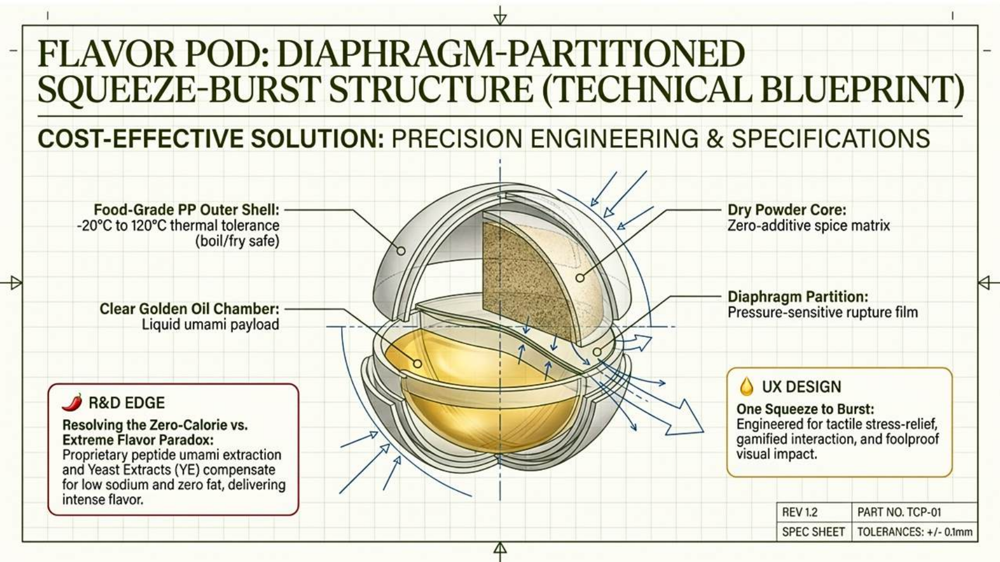
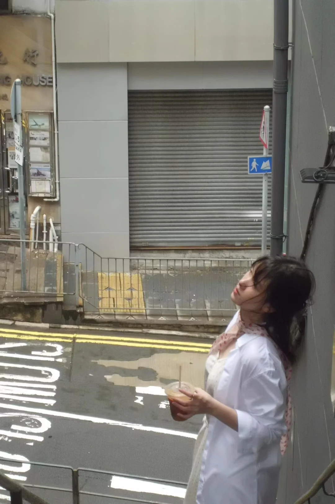

01 / PRODUCT CONCEPT × AI CODING
把产品构想，做成可以直接体验的作品。

↗- 01
产品构想
从一人食与轻烹饪场景出发，组织风味胶囊概念。
- 02
体验设计
串联食材选择、菜谱匹配与周计划。
- 03
AI Coding
将方案实现为可操作的网页交互原型。
网页：AI Coding ｜ PPT：Nano Banana、NotebookLM 辅助制作。原型使用示例内容，不产生真实订单。
02 / BUSINESS ANALYTICS × AI WORKFLOW
AI Analysis
将复杂、模糊的业务需求，拆解并固化为 AI 可理解、可执行的任务链与知识结构。
STRUCTURE BEFORE ANSWERS
把业务语言，
变成执行逻辑。
一次拆解，形成下一次可以复用的规则。
基于实习方法重构的演示。两个虚构品牌 × 六个渠道，所有数据、业务记录及结论均为模拟。
03 / OPERATIONS × SYSTEM DESIGN
DIOR
把分散的订购规则，连接成可执行、可维护的数字化系统。
- 01
规则与主数据
统一人员、柜台与 SKU 信息，建立关联基础。
- 02
双场景需求与审核
用独立问卷承接需求，自动辅助款式与地址核验。
- 03
库存、成本与仪表盘
联动订购、库存和金额计算，支持业务监控。
- 04
自动化、内测与 SOP
根据反馈修复链路，沉淀可交接的操作指南。
公式按原图展示；灰色区域为已遮盖的信息。仪表盘为无真实数据的图表结构示意，放大图使用同一份素材。
04 / STRATEGY × ESG × AI
ESG × AI
从价值链研究出发，把可持续议题转成业务问题。
精选《项目试阅》P6–8。页面数值属于比赛研究材料，不代表个人业绩。
05 / EDITORIAL × PARTNERSHIPS
Content & Connect
自媒体运营 · 外拓洽谈：用内容打开合作，也让合作持续。
选题与沟通 → 内容策划与制作 → 发布与反馈 → 持续合作
从首店推广，
到新店再次邀约。
今牛、小小牛、文汇牛为同一商家的合作记录。阅读量按已提供材料约计，开店与榜单表现不作单篇推文的因果归因。
Other perspectives.
数学建模
问题拆解 · 方法比较 · 边界检验G-Research
Crypto
数据探索、模型比较与研究记录。
在 GitHub 查看项目 ↗
A little
more human.
我是陈佳佳，Kassie。
上海对外经贸大学 · 金融学
在蔚来、DIOR 与慧科讯业的实践中，把数据分析、业务理解和工具搭建连接起来。
也喜欢用照片记录生活，把对画面与表达的兴趣带进作品。
查看简历 ↗